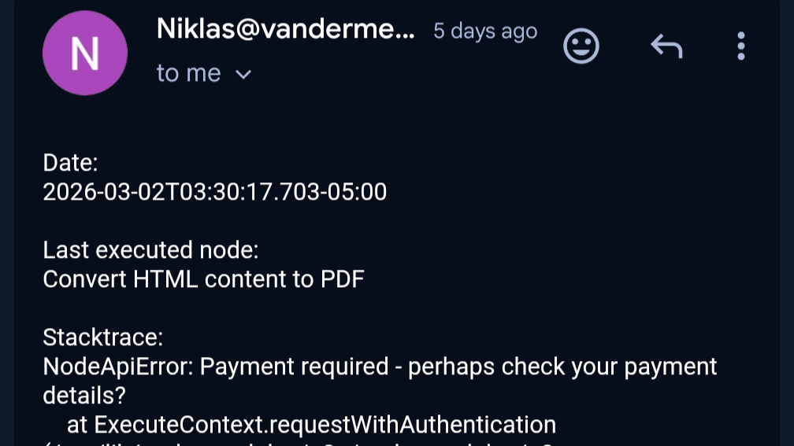
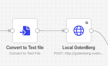

The problem
One of the things I built in N8N was a workflow that generates PDFs — archiving documents, formatting reports, that sort of thing. I'd built it because I was annoyed at having to store train tickets and its metadata each day. It was actually why I wanted to set up ajn iPaaS platform in the first place. It had been one of my favorite automations: build it in a day and forget about it because it just works. Thus, I was upset when it didn't work with the following error:

It had worked flawlessly, but all good times must come to an end. I guess this was my first proper technical debt to fixMy first instinct was to reach for Pandoc. It's one of the success stories coming out of the functional programming field, and my mathematical friend (you know who you are) had raved about it's elegance. It took some looking up online to get a Pandoc node in N8N working... The node required a separate installation of Pandoc and a lot of tinkering to get it working. It felt like I was fighting a program that wasn't implemented well ... Which after checking the GH repo was confirmedly vibe-coded by someone with no background in programming. After a few hours of painful bug fixing, I had come across the main problem in my plan: Pandoc converts documents — it doesn't render them. I can lode the technical implementation, but I was simply using the wrong tool for the job.
After accepting that Pandoc wasn't the answer, I went looking for something that would actually render HTML properly. That search led me to Gotenberg.
What Gotenberg is
Gotenberg is a stateless HTTP API for PDF generation. You send it an HTTP request with your HTML (or a URL, or an Office document), and it sends back a PDF. Under the hood it bundles Chromium for HTML rendering and LibreOffice for document conversion. I was looking for something that renders the HTML page as well as a browser, and well, nothing comes closer than this.
| Memory | Swap | CPU | Disk Size |
|---|---|---|---|
| 2 GB | 512 MB | 2 CPU | 16GB |
I really tried reducing the memory-hungry Chromium to 512MB because it never uses more than ~300MB, but encountered problems with the rendering and availability. I have a suspiscion you could reduce it further, but for now I have left it like this because I don't need to ;) .
A well oiled machine
That's how I see new services getting deployed to my ProxMox now. To start off, give the AI some references. I found this easiest by just linking some folders of other projects.
ln -s ~/projects/n8n ./n8n
ln -s ~/projects/modsec-waf ./modsec-waf
You are an experienced infrastructure engineer with in depth knowledge of IaaS, Ansible, Linux System Administration and installing a wide variety of programs in different programming languages.
You prefer to keep code simple over making it overly complex, and are aware of which architectures bring which issues with it (Java with memory, ...)
We will build the infrastructure of my homelab further to set up a system on a Proxmox virtual host.
The rules are as follows:
Containers should always be unprivileged wherever possible, all exemption need to be approved exceedingly and alternatives considered always.
Terraform code goes into infra/_
All variables are handled with env.tfvars. You will always have one example .tfvars within infra/env/_
If there is a ever a remote-exec, if more than 1-2 lines of code, it should be lifted to be a proper script:
Within infra/configuration/_
The script (most likely) describing what it does .sh
All lines within the script should be clearly commented as to what it does and the impact it has.
The README should be kept up-to-date, with clear instructions on:
How to launch it (PRE-starting steps)
How to run the code / what the code does if complicated with detailed steps
A change log
A section (and corresponding folder containing scripts) of how to keep the software up to date
A section (and corresponding folder containing scripts) of how to back up the software / data within the software & restore it if necessary
A section (and corresponding folder containing scripts) of hardening of the image and software.
A section for potential bugs & improvements
Please plan out any details before implementing.
Security should be a large concern of yours. Please think of applying proper isolation and segmentation.
I tell it I want Gotenberg, provide the GitHub Repo and simply wait 15 minutes for it to complete the Terraform and setup scripts. I do a quality check, plug in the variables and run Terraform apply. No biggie.
Why does the computer do what you tell it to do instead of what you want it to do
Except, I ran Terraform apply and it takes 30 minutes... Hmm... Okay, I do have a horribly old laptop under it, it's not unusual for that thing to take a while. But then I start paying attention and notice it's compiling the binary... Highly unusual. Apparently the AI had taken mainly my n8n as a reference project, using the NodeJS n8n as a reference instead of the containerized ModSec-WAF. From an architectural point of view, I also don't really like to think about running a Docker container within a LXC container, but from a practical point of view I prefer not having to spend hours debugging. One little course correction later, and it now took 10 minutes (told you my old laptop takes a while), and it was up and running.
Glorious N8N
From N8N's perspective, calling it is just an HTTP request:
POST http://<gotenberg_ip>:3000/forms/chromium/convert/html
Content-Type: multipart/form-data
files[index.html]: <your HTML file>
→ returns a PDF

Clean, simple, no state to worry about. If the container dies, I just restart it. Nothing is lost.Security
Given that Gotenberg runs Chromium and can fetch URLs, I wanted to be a bit careful here.
- SSRF protection: A deny-list protects Chromium from making outbound requests to any private IP range or the cloud metadata endpoint (
169.254.169.254). - No internet exposure: The port is strictly internal. Gotenberg has no authentication built in, which is fine as long as it's not reachable from outside your network.
- tmpfs mounts:
/tmp,/var/cache, and the Gotenberg home directory are all mounted as tmpfs — nothing sensitive written to disk. - CIS hardening: I run the same
harden-lxc.shscript I use for all my containers — CIS Debian 13 Benchmark Level 1, applied via SSH from my machine during the Terraform provisioning run. The Gotenberg profile specifically skips disablingnet.ipv4.ip_forward(which Docker needs for its internal bridge network).
Updating
The update-gotenberg.sh script runs from your machine via SSH and handles two independent phases: OS package updates and the Docker image update. You can run either or both:
# Full update
./update/update-gotenberg.sh -h 192.168.1.210
# Just the Docker image, pinned to a specific version
./update/update-gotenberg.sh -h 192.168.1.210 --skip-os -v 8.18.0
# Rolled back to a previous version
./update/update-gotenberg.sh -h 192.168.1.210 --skip-os -v 8.17.3
It pulls the new image before stopping the running container, so downtime is a few seconds rather than however long a 2 GB download takes. The script also prints a rollback command at the end if the image changed, which I appreciate every time I don't need to look it up.
Takeaways
- Pandoc is a great tool, but it's a document converter, not a browser. If your HTML relies on anything written after 2010, you probably want something with Chromium behind it
- I love the fact that at this point, adding or removing containers feels intuitive and easy.
- Stateless services are a pleasure to operate. No backups, no migrations, no "what was the state of that database." Re-deploy and move on
I am considering adding a mock project to GitHub that has all the scripts for one of the projects. I havent because I kind of assume no one looks at my GitHub or these writeups anyway. I have released the one for ActualBudget though, though it doesnt have the hardening script yet.